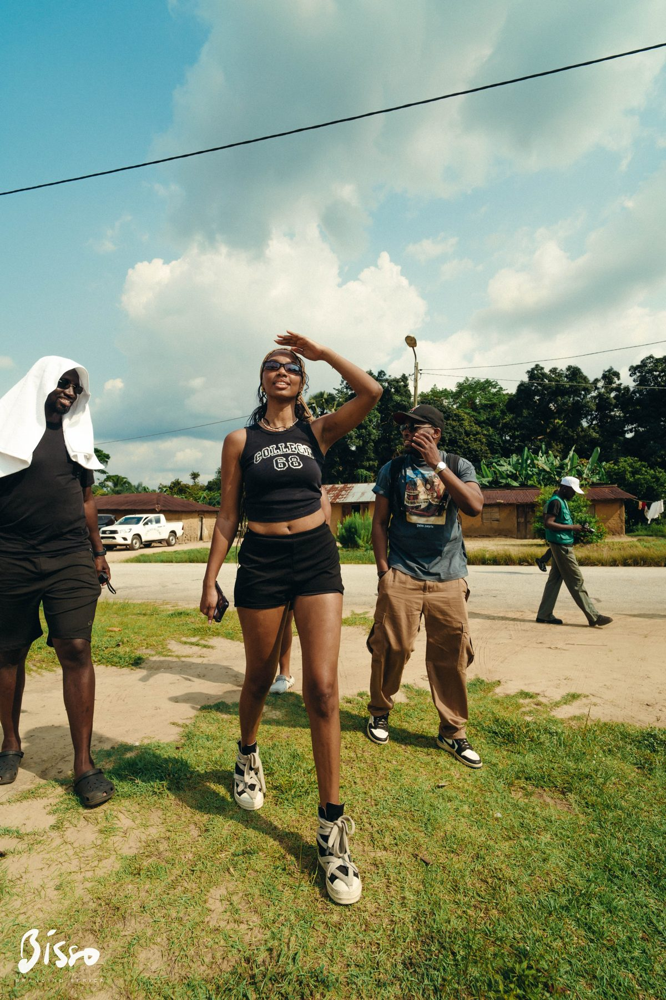

Une aventure au Congo
Un récit territorial transformé en expérience, en images et en portée.
37 influenceurs mobilisés, 7 jours d’opération, 1 600 kilomètres parcourus et une narration conçue pour faire circuler une vision plus forte et plus désirable du Congo.